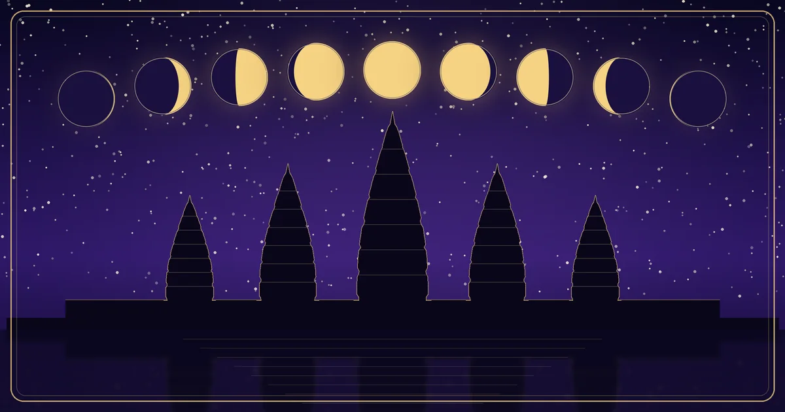

Khmer Culture & Calendar
Khmer Lunar Calendar: Understanding Khmer Moon Dates and Your Lunar Birth Date
How Cambodia's traditional calendar counts the days of the moon, and what your own lunar birth date means.

ប្រតិទិនចន្ទគតិខ្មែរ
Khmer Lunar Calendar: Today
Loading today’s Khmer lunar date…
In Cambodia, many families keep two calendars at once. Day-to-day life runs on the Gregorian calendar, but the Khmer lunar calendar is still used for many important occasions: Buddhist holy days, festivals such as Pchum Ben and the Water Festival, wedding planning, and the dates that grandparents remember a birth by. If an older relative says you were born on "៨រោច ខែភទ្របទ", they are giving your birthday on this lunar calendar. This guide explains how that kind of date works, and the calendar above shows today’s date the same way.
What Is the Khmer Lunar Calendar?
The Khmer calendar is a lunisolar calendar. Each month follows one cycle of the moon, from new moon to full moon and back, which takes about 29½ days. Because half-days are impossible, months alternate between 29 and 30 days.
Twelve such months make only about 354 days, roughly 11 days shorter than a solar year. To keep festivals in the right season, the calendar adds time in some years:
- a normal year has 354 days;
- a year with an extra day (ចន្ទ្រាធិមាស) has 355 days, and the month ជេស្ឋ gets 30 days instead of 29;
- a year with an extra month (អធិកមាស) has 384 days, and the month អាសាឍ is repeated as បឋមាសាឍ (first Asadh) and ទុតិយាសាឍ (second Asadh).
Which years get the extra day or month is decided by traditional calculation rules. For example, the lunar years that contained Pchum Ben in 2018, 2023 and 2026 each had the extra month, which is why Pchum Ben fell late in those years.
Understanding កើត and រោច
Khmer lunar dates are not numbered 1 to 30. Each month is split into two halves, and the days are counted separately in each half:
- កើត (kaet), the waxing moon: the moon grows brighter. Days are counted 1 កើត to 15 កើត, and 15 កើត is the full-moon day.
- រោច (roach), the waning moon: the moon shrinks. Days are counted from 1 រោច to 14 រោច in a 29-day month, or to 15 រោច in a 30-day month. The last day of the month is the dark-moon day.
So "៨រោច ខែភទ្របទ" means the 8th day of the waning half of the month ភទ្របទ. A full date usually adds the weekday, the animal year, the ស័ក and the Buddhist Era year, for example "ថ្ងៃចន្ទ ៨រោច ខែភទ្របទ ឆ្នាំរោង សំរឹទ្ធិស័ក ពុទ្ធសករាជ ២៥៣២" (Monday, 3 October 1988).
One detail matters: the calendar is set by traditional rules, not by watching the sky each night. 15 កើត is the calendar's full-moon day and usually matches the real full moon closely, but an astronomical moon-phase app can be a day off from the printed Khmer calendar.
Khmer Lunar Months
The twelve months, in their traditional order, with their usual lengths:
| Month | Name | Days |
|---|---|---|
| មិគសិរ | Migasir | 29 |
| បុស្ស | Boss | 30 |
| មាឃ | Meak | 29 |
| ផល្គុន | Phalkun | 30 |
| ចេត្រ | Chet | 29 |
| ពិសាខ | Pisak | 30 |
| ជេស្ឋ | Jesth | 29 (30 in a leap-day year) |
| អាសាឍ | Asadh | 30 (twice in a leap-month year) |
| ស្រាពណ៍ | Srap | 29 |
| ភទ្របទ | Phatrabot | 30 |
| អស្សុជ | Assoch | 29 |
| កត្ដិក | Kadeuk | 30 |
Romanized spellings vary from book to book. The Khmer names are the reliable reference.
Years: animal, ស័ក and Buddhist Era
A Khmer year is named in several ways at once: one of the 12 animals (ជូត, ឆ្លូវ, ខាល… កុរ), one of 10 ស័ក (ឯកស័ក to សំរឹទ្ធិស័ក), the Buddhist Era (ពុទ្ធសករាជ, ព.ស.) and sometimes the Chula Sakarat era (ចុល្លសករាជ). The animal year and ស័ក change during Khmer New Year in mid-April. The Buddhist Era year turns over around Visak Bochea, the full moon of ពិសាខ.
Khmer Lunar Calendar vs. Chinese Zodiac
Both systems use the same twelve animals, so they are easy to mix up, but they are separate calendars:
- When the animal year changes. The Chinese zodiac year starts at Chinese New Year, in late January or February. The Khmer animal year starts at Khmer New Year, in mid-April.
- Different rules. The Chinese calendar has its own month and leap-month rules. The Khmer calendar uses the Khmer month names, the កើត/រោច day count and its own leap rules.
- Different purposes. On MyBirthSign the Chinese zodiac describes personality and compatibility. The Khmer lunar calendar is about dates: holy days, ceremonies and festivals.
For a birthday between January and mid-April, the two systems can give different animals. Someone born on 1 March 2026 is a Horse in the Chinese zodiac (after Chinese New Year on 17 February), but the Khmer calendar still counts that day in the Snake year (ឆ្នាំម្សាញ់) until Khmer New Year on 14 April. Neither answer is wrong; they come from different calendars.
Why Dates Can Differ Between Calendars and Time Zones
A Khmer lunar date belongs to a calendar day in Cambodia. When it is already Sunday morning in Phnom Penh, it can still be Saturday in Europe or the Americas. That is why the calendar card at the top of this page always uses Cambodia time (Asia/Phnom_Penh, seven hours ahead of UTC all year), and changes to the next lunar day at midnight there, not at midnight where you are.
- Birthdays abroad: to find a lunar birth date, use the date written on the birth record, the date where the birth happened. Do not convert it to Cambodian time.
- Printed calendars and moon apps: the Khmer calendar follows traditional rules, so its full-moon day can be a day away from an astronomy app.
- Public holidays: official days off are announced by the government each year and can include extra days around the lunar date.
- Spellings: month names are romanized in different ways (for example Assoch or Assuj). The Khmer script is the reliable form.
How to Find Your Khmer Lunar Birth Date
The easiest way is to use the MyBirthSign Zodiac Checker. Enter your birthday once, and alongside your zodiac result it shows:
- your Khmer lunar date, for example ៨រោច ខែភទ្របទ;
- whether it was a កើត (waxing) or រោច (waning) day;
- the Buddhist Era year (ព.ស.);
- the Khmer animal year and ស័ក.
The Checker uses the traditional Khmer calendar rules. We checked it against Cambodia's official holiday dates (Visak Bochea, Pchum Ben and the Water Festival) for each year from 2016 to 2026, and it matched every one.
In a few cases the Checker shows a short note instead of a single answer. For example, if you were born on the first day of Khmer New Year, the animal year changes at a set hour that day, so it depends on your birth time. It shows dates for birthdays from 1900 to 2100.
The Compatibility and Business Partner tools also show both people's lunar birth dates. The Wedding Date tool shows the lunar day for each suggested date.
Why your lunar birthday moves: a lunar year is about 11 days shorter than a Gregorian year, and every few years an extra month pulls it back. So your lunar birthday lands on a different Gregorian date each year, usually within the same few weeks.
Buddhist Observance Days and Khmer Traditions
Many religious days follow the lunar calendar. In Cambodian Theravada practice, the regular holy days (ថ្ងៃសីល) fall on the 8th and 15th of the waxing half and the 8th and last day of the waning half. Many people visit the pagoda or keep extra precepts on those days. The major observances include:
- Meak Bochea, 15 កើត ខែមាឃ (full moon of Meak). It was listed as a public holiday in 2019 (19 February), but it is not in the official public-holiday list for 2026.
- Visak Bochea, 15 កើត ខែពិសាខ, remembering the Buddha's birth, enlightenment and passing (1 May 2026).
- Royal Ploughing Ceremony, 4 រោច ខែពិសាខ (5 May 2026).
- Pchum Ben, which ends on 15 រោច ខែភទ្របទ. The official three-day holiday runs from 14 រោច ភទ្របទ to 1 កើត អស្សុជ (10–12 October 2026).
- Water Festival (Bon Om Touk), around the full moon of កត្ដិក. The official holiday is 14 កើត to 1 រោច (23–25 November 2026).
Khmer New Year is different. It follows the sun, not the moon, and starts with Moha Songkran in mid-April (14–16 April 2026).
Lunar dates vs. public holidays. The lunar calendar tells you which lunar day a festival belongs to. The official days off are announced each year by the Royal Government; the 2026 list was set by Sub-Decree No. 167. The two usually agree, but always check the official announcement before planning travel or work. Holiday websites sometimes list the wrong date. For Visak Bochea 2026 we found sources saying 4 May and 22 May, while the official date is 1 May.
Frequently Asked Questions
What is the Khmer lunar calendar?
It is Cambodia's traditional lunisolar calendar. Months follow the moon, with 29 or 30 days. In some years an extra day or an extra month is added so the calendar stays in step with the seasons. It is used for Buddhist observances, festivals and family ceremonies.
What do កើត and រោច mean?
កើត is the waxing half of a lunar month, counted 1 to 15, and 15 កើត is the full-moon day. រោច is the waning half, counted 1 to 14 in a 29-day month or 1 to 15 in a 30-day month.
Why does my Khmer lunar birthday change on the Gregorian calendar?
A normal lunar year has 354 or 355 days, about 11 days shorter than a Gregorian year. Every few years a 384-day year with an extra month brings it back. So the same lunar date falls on a different Gregorian date each year.
Is the Khmer lunar calendar the same as the Chinese zodiac calendar?
No. Both use 12 animal years, but the Khmer animal year changes at Khmer New Year in mid-April, while the Chinese zodiac year changes at Chinese New Year in late January or February. Their months, leap rules and day counting are also different.
Why does the calendar on this page show a different day from my phone?
The card uses Cambodia time (Asia/Phnom_Penh), so between midnight in Cambodia and midnight where you live it already shows the next day. It changes to the next lunar day at midnight Cambodia time.
How can I find my Khmer lunar birth date?
Enter your birthday in the Zodiac Checker. Next to your zodiac result it shows your Khmer lunar date, whether it was a កើត or រោច day, the Buddhist Era year and the Khmer animal year and ស័ក.
Conclusion
The Khmer lunar calendar follows the moon: two halves of each month (កើត and រោច), months of 29 or 30 days, and the occasional extra day or extra month that keeps the festivals in season. Knowing your lunar birth date connects you to the way Cambodian families have long kept time. It is also useful for ceremonies at the pagoda.
Try these next: find your date with the Zodiac Checker, read the daily fortune for all 12 animals, browse the zodiac guide, or learn how your Chinese zodiac sign is calculated and what the five elements mean.
Sources
- Royal Government of Cambodia, Sub-Decree No. 167 (2026 public holidays), as published by Andersen in Cambodia and PPCBank.
- Past Cambodian holiday dates: Calendarific, 2019, and its Visak Bochea and Pchum Ben pages.
- Unicode Consortium, Khmer Symbols (lunar date symbols): waxing and waning days 1–15, បឋមាសាឍ and ទុតិយាសាឍ.
- Calendar rules as implemented in the open-source momentkh library, which the Checker uses.
This article explains a cultural calendar for general knowledge. Always check a printed Khmer calendar or your local pagoda for ceremonies, and the official government announcement for public holidays.